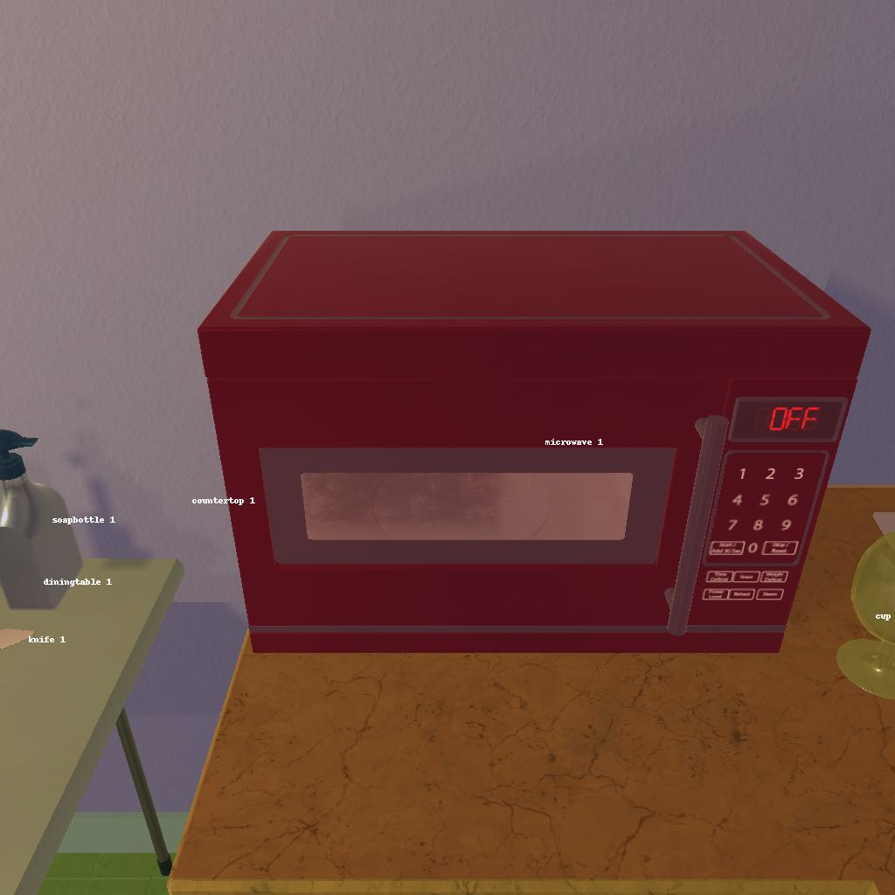

---------------------------------------------------------task: 14---------------------------------------------------------
--------------------------------------------------------------------------------------------------------------------------------------------------------------------
--------------------------------------------------------------------------------------------------------------------------------------------------------------------
Step:--------------------------------------------------------------------------4-------------------------------------------------------------------------------
----------------------------------------
VLM Prompt:
Image1:
**Instruction**
1. Analyze the provided image to identify all visible household objects, focusing on those relevant to the task description "cool some apple and put it in countertop."
2. Use the analysis of the image and the task hint "The agent must find an object of the desired type, pick it up, go to a fridge, cool the object with the fridge, then find the correct location to place it, and put it down there. The agent does not need to use the fridge button or open the fridge to cool the object, and the agent just needs to do action that is "cool the object with the fridge"." to answer the question: what is the most reasonable action in the choices for the task description "cool some apple and put it in countertop"?
4. Decide and write the answer using the template: The answer is: (i): , where i is the real number. If there is no desired object in the image, search every place based on **Initial Observation** to find the object. And if no one is exactly correct, choose a similar answer.
**Initial Observation**
You are in the middle of a room. Looking quickly around you, you can see microwave (1), countertop (1-2), cabinet (1-11), diningtable (1), drawer (1-3), sink (1), sinkbasin (1), toaster (1), stoveburner (1-4), fridge (1), coffeemachine (1), garbagecan (1)
**Answer Choices**
(1): go to cabinet 1
(2): go to diningtable 1
(3): go to drawer 1
(4): go to sink 1
(5): go to cabinet 2
(6): go to cabinet 3
(7): go to sinkbasin 1
(8): go to cabinet 4
(9): go to cabinet 5
(10): go to drawer 2
(11): go to toaster 1
(12): go to cabinet 6
(13): go to stoveburner 1
(14): go to cabinet 7
(15): go to fridge 1
(16): go to stoveburner 2
(17): go to stoveburner 3
(18): go to stoveburner 4
(19): go to drawer 3
(20): go to cabinet 8
(21): go to cabinet 9
(22): go to cabinet 10
(23): go to coffeemachine 1
(24): go to cabinet 11
(25): go to garbagecan 1
(26): open microwave 1
(27): close microwave 1
(28): examine microwave 1
**Answer**
Let's think step by step by following the instructions.
----------------------------------------
----------------------------------------
Original Response:
Firstly, the task description asks to "cool some apple." Since apples are not visible in the provided image, we need to search for them based on the Initial Observation. Apples are typically stored in a fridge or on a countertop, but since the task specifies cooling them, it's reasonable to assume they would be in the fridge.
Secondly, after the apple is cooled, it needs to be placed on the countertop. The image shows a countertop, which is the target location for placing the apple after cooling it.
Based on the analysis, the most reasonable action from the choices given would be to go to the fridge to cool the apple. After that, the agent can place the cooled apple on the countertop. The action of going to the fridge is listed in the answer choices.
The answer is: (15): go to fridge 1
----------------------------------------
----------------------------------------
>>> Refine Original VLM Response and Get Pure Action: go to fridge 1
----------------------------------------
-----------------------------------------------------------------
Running time: 9.81853723526001 seconds
Total Money: 4.556550000000001
-----------------------------------------------------------------
-----------------------------------------------------------------
Text Observation:You arrive at loc 17. The fridge 1 is closed.
-----------------------------------------------------------------
UNSUCCEED